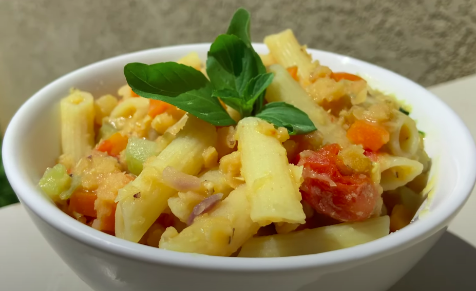

One Pot Lentil Pasta

Description
Easy one pot lentil pasta recipe is a satisfying, comforting vegetarian meal.
Ingredients
- 1 cup of red lentils
- 2 cups of pasta
- 10 chery tomatoes
- 1 onion
- 1 zucchini
- 1 carrot
- 4 cups of water
Steps
- Sauté the onion in a pan with a drizzle of olive oil and add the diced zucchini and carrot.
- Sauté for a little longer and add the lentils, pasta and tomatoes.
- Add water and cover the pan.
- Wait 20 minutes and in the final minutes, uncover the pan so the water evaporates.
Home